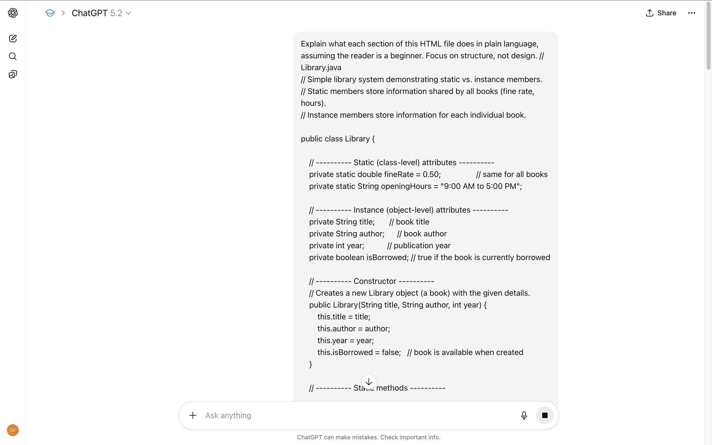
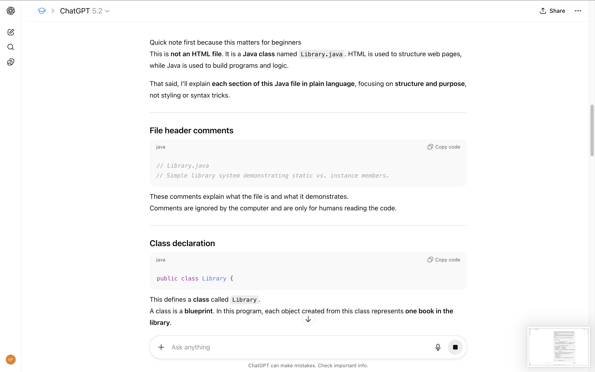
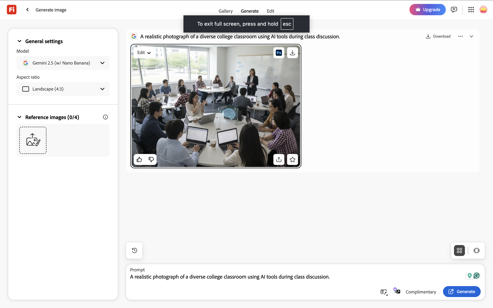

Introduction
AI tools are increasingly embedded in digital culture, creative work, and data analysis. For this lab, I evaluated two AI tools from different categories: ChatGPT (text and code assistance) and Adobe Firefly (image generation). I chose these tools because they are directly relevant to my coursework in Digital Culture and Data Analytics and represent common ways students and professionals interact with AI today. Using a four-part evaluation framework—Capabilities, Appropriate Use, Ethics, and Transparency—I tested each tools strengths, limits, and implications.
Capabilities

ChatGPT performs well at generating structured text, brainstorming ideas, summarizing concepts, and assisting with code explanations. During testing, I used it to outline academic reflections, explain HTML structure, and generate draft analyses. Output quality improved significantly when prompts were detailed and specific. However, the tool struggles with factual precision at times and can sound overly confident even when incorrect. It also tends to generalize unless pushed with constraints or examples.Appropriate Use
ChatGPT is best used as a drafting and thinking partner rather than a final authority. It fits well into workflows that involve idea generation, early-stage writing, and learning unfamiliar technical concepts. Poor use cases include submitting AI-generated text as final academic work without revision or relying on it for original analysis or citation-heavy research. Human judgment is essential for interpretation, accuracy, and voice.
Ethical Considerations

ChatGPT is trained on a mixture of licensed data, human-created content, and publicly available text, which raises concerns about bias and authorship. The model can reproduce dominant cultural perspectives while marginalizing others. While safeguards exist to limit harmful content, gaps remain around attribution and overreliance. Users are responsible for ensuring originality and proper citation when using outputs.Capabilities

Adobe Firefly excels at generating images from text prompts and integrating AI into familiar design workflows. I tested it by generating conceptual images related to media critique and digital culture themes. Firefly produces clean, visually polished images, especially for illustrative purposes. Its limitations appear when prompts require very specific details or realism, where outputs can feel generic or repetitive.Appropriate Use
Firefly is well suited for concept art, visual brainstorming, and placeholder imagery in presentations or portfolios. It is less appropriate for projects requiring factual visual documentation or culturally specific representation. The tool works best as a supplement to human design skills, not a replacement for intentional visual storytelling.
Ethical Considerations
Adobe emphasizes that Firefly is trained on licensed and Adobe Stock content, positioning it as a more ethically sourced image generator. Despite this, questions remain around originality and the long-term impact on creative labor. Bias can still emerge through prompt interpretation and default visual norms embedded in training data.
In my academic and professional work, I imagine using AI tools to accelerate early stages of thinking—drafting, organizing ideas, and visual exploration—while maintaining human control over interpretation and final output. Within the DCDA program, AI tools may reduce time spent on technical barriers but increase the importance of critical thinking, ethics, and media literacy. Skills like contextual analysis, storytelling, and ethical judgment remain uniquely human.
As AI tools continue to evolve, important evaluation questions include: What data is this tool trained on? What assumptions does it embed? How transparent is its output? And how does it shift power, labor, or authorship? Developing these questions as habits is more valuable than mastering any single platform.